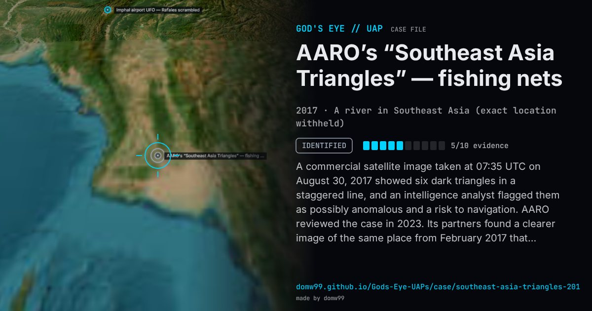

AARO’s “Southeast Asia Triangles” — fishing nets

A commercial satellite image taken at 07:35 UTC on August 30, 2017 showed six dark triangles in a staggered line, and an intelligence analyst flagged them as possibly anomalous and a risk to navigation. AARO reviewed the case in 2023. Its partners found a clearer image of the same place from February 2017 that showed the triangles as cone-shaped fishing nets anchored in a river, all about 11 by 7 metres; later images from late 2022 and early 2023 showed the same shapes with turbidity trailing downstream, proving they were in the water, and stock footage showed such nets on that river. AARO closed the case as fishing nets. Its report names only “Southeast Asia”; the image’s time stamps, 07:35Z and 14:05 local, match Myanmar’s clock (UTC+6:30), and the marker is placed there only approximately.
Explanation
AARO, with intelligence and three science-and-technology partners, found “almost certainly” static, cone-shaped fishing nets on a river, each about 11 by 7 m, matched in other satellite images from 2017, 2022 and 2023 and in stock footage of the same river.
What was seen
Shape: Six dark triangles in a line
Witnesses: An intelligence analyst reviewing satellite imagery
Duration: A single satellite image
Sources
- AARO case resolution, “Southeast Asia Triangles” (copy at The Black Vault)
- The Black Vault — AARO releases three case resolution reports (2023)
Browse
- 2010s
- Identified
- Photo and video cases
- Official government documents
- Photographs
- Infrared or other sensor data
- Formations and rows of lights
- Triangles and V shapes